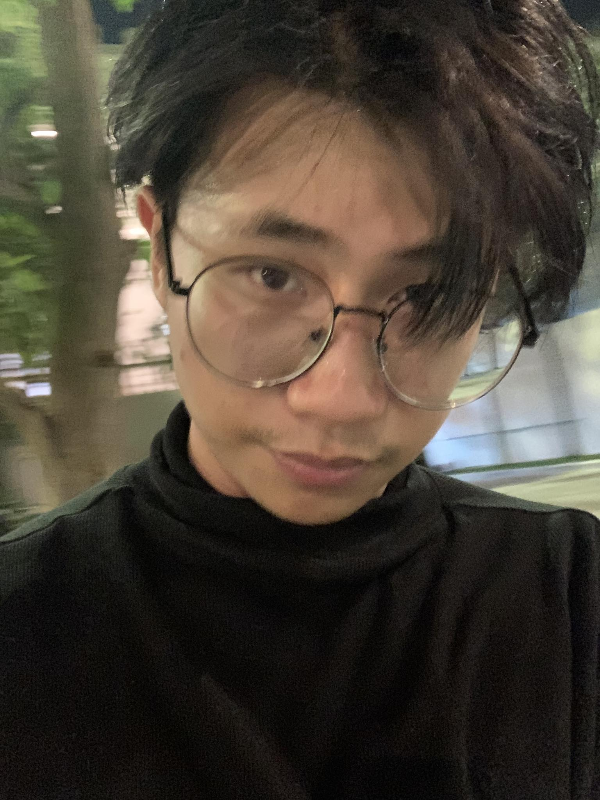

SONG UYLONG

Zelda.com, Phnom Penh, Canbodia
Experience:
Okur Coffee (Barista) 01/01/2021-01/04/2021
- Experience with high quality coffee making process
- Able to make delicous coffee for my girlfriend
- What i can make:
- Iced/hot latte
- Iced/hot Americano
- Iced/hot Cappucino
- Iced/hot Choloate
- Iced/hot Matcha
- Any frapped drink
- Experience with worklife
- Experience about how society's work, had a good time with colleagues.
- Recieved 150$/month
Education:
- Chinese
- Grade (1-6) TounFa Olympic Schoo
- Spring Education (GCP-2)
- Khmer Study Program
- (Kindergarden - Grade 1) Terk L'ork Primary School
- Grade (2 - 2.5) Sovannaphum School
- (2.5 - 3) Terk L'ork Primary School
- Grade (3 - 6) Royal International School
- Grade (7 - 12) Westline STM
Recieved A National Cambodian's Exam With Grade (A)
- English Study Program
- Hello American (1-2 Years)
- Royal International School (3-4 years)
- Westline STM School (5 years)
Taken TOEFL'Exam (532 on CBT)
- Australian Centre for Education (1 years)
Taken IELTS'Exam (Band 6.0)
- Paragon International University
Currently Taking Bachelor's Degree, Majoring In Management information System (MIS)
Skills:
- Coding (HTML, C++ fundamentals)
- professional Coffee making
- (Clear, effective, improving) English
- Academic Reading's Skills
- Communication
- Problem-solving SKills
- LeaderShip
- Self-improving
Hobbies:
- Interest in building applications
- Acoustic/Electric Guitar
- Reading books (Self-Enhancement, Fiction... )
- Listen to podcast
- Gym
- Biking
- Walking/Running